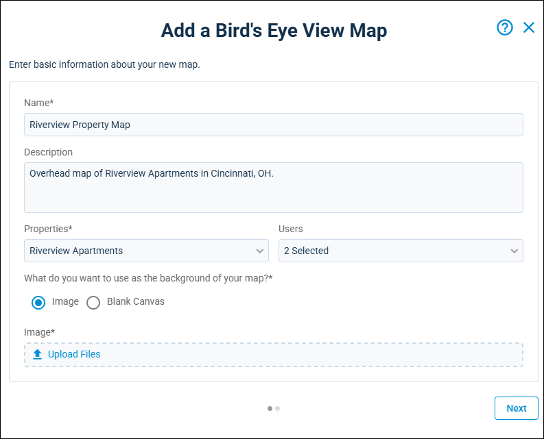
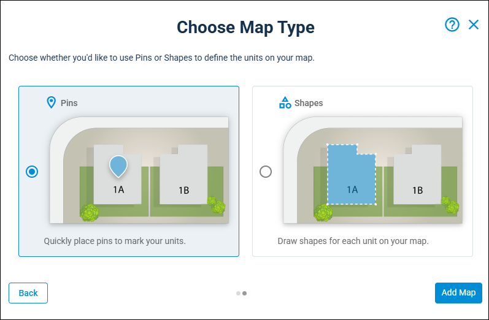
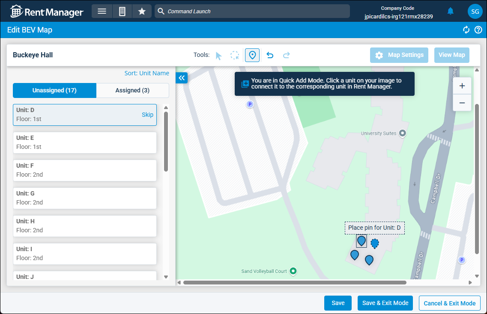
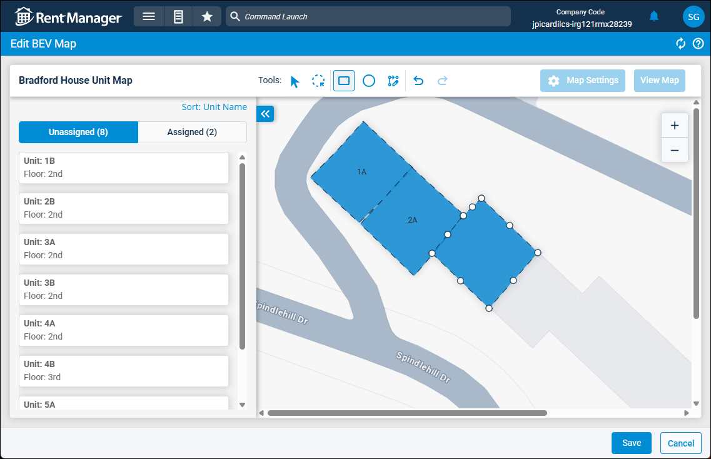

Source: https://rmxhelp.rentmanager.com/Topics/Express/Other/BEV-Map-Add.htm
Add a Bird's Eye View (BEV) Map
Bird's eye view (BEV) is a tool that allows you to use images of your properties and units to view various information about the units at your properties, similar to viewing a map. This includes an overhead view of the property, shapes or pins for units that are linked to their respective accounts, and various overlays to display other specified data for the units.
You can create a BEV map by importing an overhead image of your property or creating a canvas in Rent Manager. You can then outline the locations of your units on the image and link those shapes or pins to the units in your database. This allows the map to display information about those specific units.
Warning
Rent Manager Express has improved map-making capabilities, allowing you to create very large map images in bird's eye view that may not be accessible in Rent Manager 12. If a map image exceeds 2500 x 2500 px, the map will not load in Rent Manager 12.
Related Privileges
| Group | Privilege | Column |
|---|---|---|
| Bird's Eye View (BEV) | BEV Maps | Add, View |
For more information, refer to Control User Access.
Step 1: Enter Map Information
The first step creating a new BEV map is to add the basic information about the map. To add a new map, do the following:
-
Go to
 arrow_forward Rental Info arrow_forward Bird's Eye View (BEV) arrow_forward Manage BEV Maps.
arrow_forward Rental Info arrow_forward Bird's Eye View (BEV) arrow_forward Manage BEV Maps.
The Manage BEV Maps page displays. -
Click
 Add Map.
Add Map.
-
Enter or select information into the available fields described below.
Field Description Description
An additional note that provides further context and describes what the map is for.
Name
A unique name to identify this map.
Properties
The properties for which this map is used.
More Information
This field populates only with the properties to which you have access. Your access to properties can be managed from your user account or on the property's details page. For more information, refer to Limit Access to a Property.
Users
The Rent Manager users who have access to this map.
-
In the What do you want to use as the background of your map? field, select one of the following options:
Option Description Blank Canvas
Creates a new, blank image from scratch that you can customize to suit your needs. In the associated Canvas Size field, select one of the available options.
If you select this option, the map type you choose in the next step can only be Shapes. You cannot mark units with Pins on a blank canvas.
Custom
Determine the custom size of your map's canvas. In the Length (Pixels) and Width (Pixels) fields, enter the desired height and width of the canvas in pixels.
Fill Screen
The map canvas is automatically sized to fit your screen.
Image
In the associated Image field, click
 Upload Files to import an image from your network or computer to use as the map background, such as a photo taken by drone or a picture from Google Maps.
Upload Files to import an image from your network or computer to use as the map background, such as a photo taken by drone or a picture from Google Maps. -
Click Next.
The next page of the pop-up displays.
Step 2: Select Map Type
After entering your map information, you must select whether you wish to add pins to the map for each unit or draw out the full shape of each unit.

Select from one of the options described below, then click Add Map.
| Option | Description |
|---|---|
|
Pins |
Quickly click and place pins on the map to mark units. This method can be useful for quickly setting up maps and relying on images to show the size and shape of the unit. This option can be selected only if you opted to upload an Image for your map and cannot be used for a Blank Canvas. |
|
Shapes |
Draw shapes for each unit on a map image or a blank canvas to mark the units on your map. This method can be useful for showing the size and shape of a unit on a blank canvas or on an image where it may not be clear where each unit begins and ends. |
Step 3: Mark Units on Map
The steps to mark your units on the map and link them to unit accounts vary depending on whether you selected the option to use Pins or Shapes on the previous page.
Pins

If you uploaded an image of your map, you can add pins to the image. On the left, a list of all units at the property display, with the first unit automatically selected.
More Information
By default, the map editor opens in Quick Add Mode, which allows you to quickly click on the map image to drop each pin in succession. While in this mode, certain options on the tool bar at the top of the page are disabled. To exit Quick Add Mode, click Save & Exit Mode to save your current progress or Cancel & Exit Mode to remove unsaved progress.
To add unit pins, do the following:
-
For the first unit, locate that unit's location on the map and click to drop the pin. If needed, you can click and hold the dropped pin and move it to another location.
The pin is placed on the unit's location and the next unit in the list is automatically selected. -
Repeat these steps until all units have been pinned to the map. Optionally, if there is a unit you are not ready to pin to the map, click Skip to proceed to the next unit in the list.
-
After all units are placed, click Save & Exit Mode to save the unit pins and also exit Quick Add Mode, allowing you to access other menu items on the page and tool bar. If you have already exited Quick Add Mode, click Save.
-
Optionally, you can click to add pins for other landmarks or sites on the property map, such as a pool, clubhouse, or dog park.
-
To customize how a pin displays, select the pin and click
 and select any of the following options:
and select any of the following options:Option Description Fill Color
The color to fill the unit's pin on the map.
Non-Unit Shape
If checked, this pin indicates another location or landmark on the property rather than a unit. If a unit is assigned to the pin, checking this option unassigns the unit.
In the Label field, enter the name of this site or landmark. For example, if the pin indicates the community pool, you can enter Pool.
-
Click Save.
The bird's eye view map is saved.
Shapes

If you uploaded a map image or generated a blank canvas, you can draw units onto the map or canvas. To add unit shapes and assign them to units, do the following:
-
On the toolbar at the top, select one of the following options:
Shape Tool Description (rectangle)
Click and drag a square or rectangle shape to the desired size onto the map canvas.
(circle)
Click and drag a circle or oval shape to the desired size onto the map canvas.
(Pen)
Draw a custom shape on the map. Click to lay the first point of the shape, then continue to click each corner of the shape to draw the desired shape of the unit. To complete the shape, click the final point onto the original starting point to close it.
To undo the previous point(s) laid for the shape, click the Esc key.
After any of the above shapes are created, you can click any of the white nodes around the shape's edges and corners and click and drag them to a different position, altering the shape to suit your needs.
More Information
If you have multiple units of a similar size and shape, you can select the first shape and click
 to create a copy of that shape directly on top of the original. The duplicated shape can then be moved and reshaped as needed.
to create a copy of that shape directly on top of the original. The duplicated shape can then be moved and reshaped as needed. -
To assign a unit to a shape, drag and drop the unit from the list on the left onto it's associated shape. Alternatively, click the unit shape and select the unit from the drop-down list.
-
Repeat until all unit shapes are added and units are assigned at their proper locations on the map. Additionally, you can add shapes for other landmarks or sites on the property map, such as a pool, clubhouse, or dog park.
-
To customize how a shape displays, select the shape and click
and select any of the following options:Option Description Fill Color
The color to fill the unit's shape on the map.
Non-Unit Shape
If checked, this shape indicates another location or landmark on the property rather than a unit. If a unit is assigned to the shape, checking this option makes the unit unassigned.
In the Label field, enter the name of this site or landmark. For example, if the shape indicates the community pool, you can enter Pool.
Text Rotation
The number in degrees to rotate the unit name, going clockwise. For example, if you enter 40, the unit's name on the shape turns at a 40° angle to the right.
-
Click Save.
Your bird's eye view map is saved.
Step 4: Adjust Map Settings
After your map and units are set up, you can configure other settings for your map. To edit the map's settings, do the following:
-
At the top, click
Map Settings. If this option is grayed out, be sure to click Save or Save & Exit Mode first.
The Map Settings pop-up displays.More Information
The Information tile displays the general information you entered during the map creation so you will likely not need to edit these fields. Additionally, swapping the map type of Image to Blank Canvas to or vice versa may cause you to have to recreate your units.
-
In the View and shape settings tile, the values automatically populate from the Default Map Settings pop-up. For more information, refer to Bird's Eye View (BEV) Default Map Settings (Pop-Up).
If this map's settings should be different from the default, check Override Default Settings and enter information into the available fields.Option Description Fill Color
The color to fill the shape or pin for all units that do not have a color assigned directly from the shape or pin. Click the color preview bar to select a color from the slider or color code, then click OK.
Map view
The map view overlay that displays by default when viewing this BEV map. The view that you select determines the colors and legend of the map that displays. For example, a map view for balance due may change the unit pin or shape colors to green, yellow, and orange to show which units owe higher balances.
Outline
The color of the outline for each unit shape or pin: Dark (black) or Light (white). To show no outline, select None.
Pin Size
How large the unit's pin displays on the map. This option displays only for maps that are use pins to mark units.
Transparency
The level of opacity for the selected Fill Color of all unit shapes or pins. You can set this from the slider or by entering a percentage in the associated field. 100% transparency means the color is completely opaque, while 0% means the color is completely transparent.
What information do you want to jump to when viewing your map?
When viewing the map, you can click a unit and a button displays to jump to another page for more information. This option determines if that button jumps to the details page for the associated tenant, unit, unit type, or property.
-
On the Default Unit Information tile, to edit the fields that displays when you hover over a unit shape or pin on the BEV map, click Edit Unit Information. For more information, refer to Edit Bird's Eye View (BEV) Default Unit Information (Pop-Up).
-
Click Save.
The map's settings are updated.
Next Steps
After you have set up your map, units, and settings, there are other actions you can take to use the maps or further customize them.
| Action | Description |
|---|---|
|
View Map |
To view the map, click View Map at the top. This opens the BEV map in a new tab and allows you to test how the map looks and functions. For more information, refer to View Bird's Eye View (BEV) Maps (Page). The tab where you created the map remains open, so you can make any changes as needed. |
|
Edit Map Views |
BEV maps have multiple map views that you can select and view different information regarding the units on the map, such as the tenant's delinquency status, unit rent amounts, move ins and move outs, and more. You can edit any of the existing map views or create your own. For more information, refer to Manage BEV Map Views. |